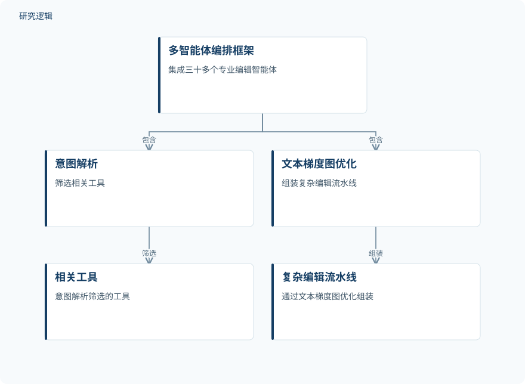

摘要解读
VideoAgent：视频理解与编辑一体化框架
VideoAgent: All-in-One Framework for Video Understanding and Editing
解读更新 2026-11-27 21:44 · 依据公开摘要整理，未核验全文细节
如何让自动视频系统既能处理多样的编辑操作，又能理解长视频并形成连贯叙事？VideoAgent 尝试把镜头创作与多智能体编排结合起来，为理解复杂视频编辑任务提供了一个观察视角。
文章目录
从短片段处理走向连贯叙事
视频编辑已成为数字媒体创作的重要环节，但摘要指出，现有自动化系统往往局限于短片段处理和特定领域任务。面对多样的视频理解与编辑操作，以及需要长视频理解的连贯叙事创作，这些系统仍有局限。
镜头创作与编辑智能体编排
VideoAgent 是一个一体化智能体框架。摘要描述了自动视频镜头创作：镜头规划智能体用于形成连贯叙事，跨模态检索用于获取与之对齐的视觉内容。
框架还集成了三十多个专业编辑智能体。意图解析用于筛选相关工具，文本梯度图优化则用于组装复杂编辑流水线；摘要没有进一步说明这两个环节之间的执行顺序。
依据摘要整理的编辑智能体编排示意


仅概括摘要明确描述的多智能体编排环节，不表示意图解析与图优化之间存在直接依赖或先后顺序。
下载 SVG图示关系说明
实线表示相邻阶段的信息流，虚线表示跨阶段联系或反馈。
多智能体编排框架 → 意图解析：包含；多智能体编排框架 → 文本梯度图优化：包含；意图解析 → 相关工具：筛选；文本梯度图优化 → 复杂编辑流水线：组装
编排成功率与人工评价结果
摘要称，作者在新提出的 VideoEdit 基准和公开数据集上开展实验，结果显示 VideoAgent 优于现有多模态大语言模型和智能体系统。报告的编排成功率为 87-95%，API 成本降低了 60%。
覆盖六类视频的人工评价显示，生成内容的质量接近人类水平，评分仅比人类创作的视频低 4%。这些是摘要对评价结果的概括，具体评分方式和比较条件仍需查阅论文。
摘要尚不能回答的验证细节
摘要没有报告样本规模、视频时长分布、具体比较系统及 API 成本的计算条件，因此仅凭摘要难以判断结果适用的任务范围，也不能独立核对不同系统之间的比较。
人工评价的参与者、评分标准和各类别表现，以及长视频理解与叙事连贯性的具体验证方式，摘要同样没有交代。这些信息未出现在摘要中，并不意味着论文没有开展相关分析。
阅读启发：关注多模态工具如何协作
阅读启发：对于关注多模态大语言模型与智能体的读者，可以进一步阅读镜头规划、跨模态检索和编辑工具编排各自承担什么角色，以及它们如何共同服务于视频创作。
建议同时查看基准任务、比较条件和人工评价细节，以理解摘要中的成功率、成本与质量指标分别衡量了什么，以及结论能够覆盖哪些场景。
以上为本站阅读启发与建议，不是论文已验证的结论。